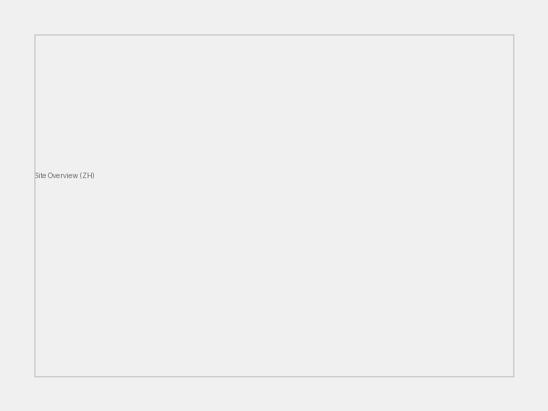
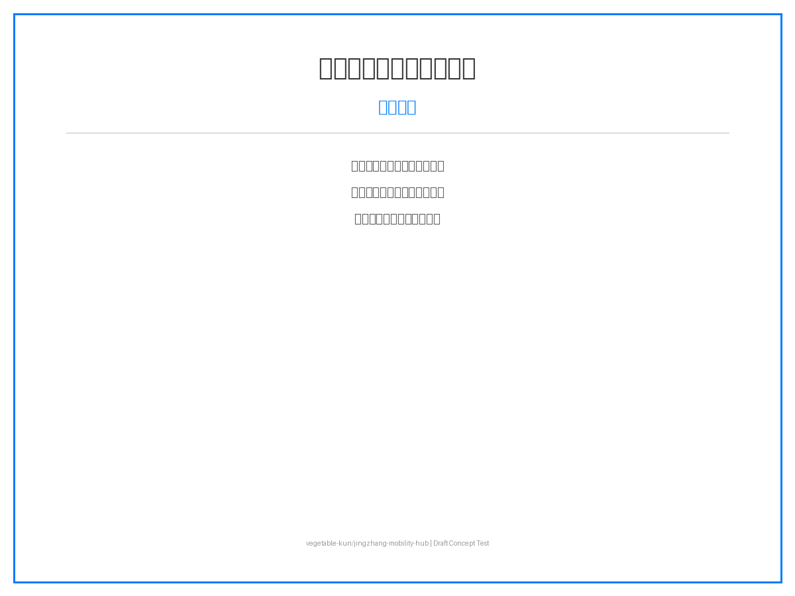
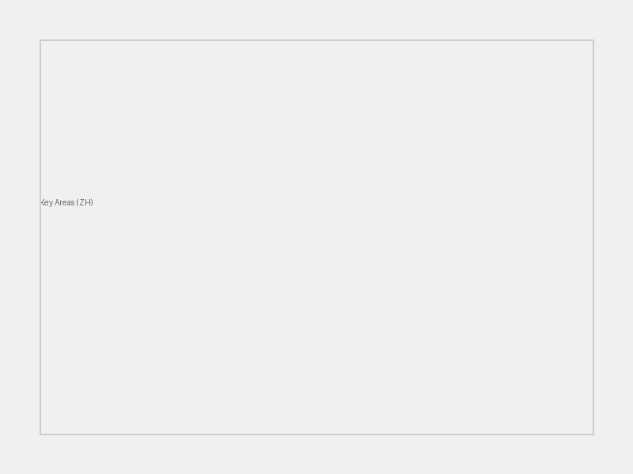
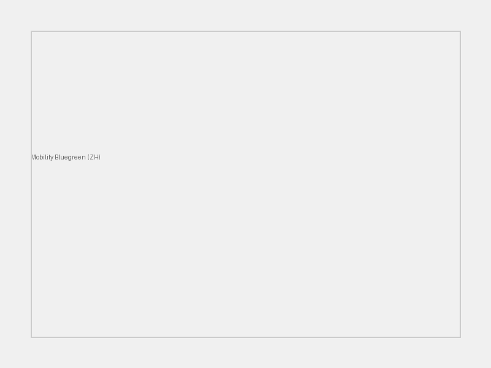
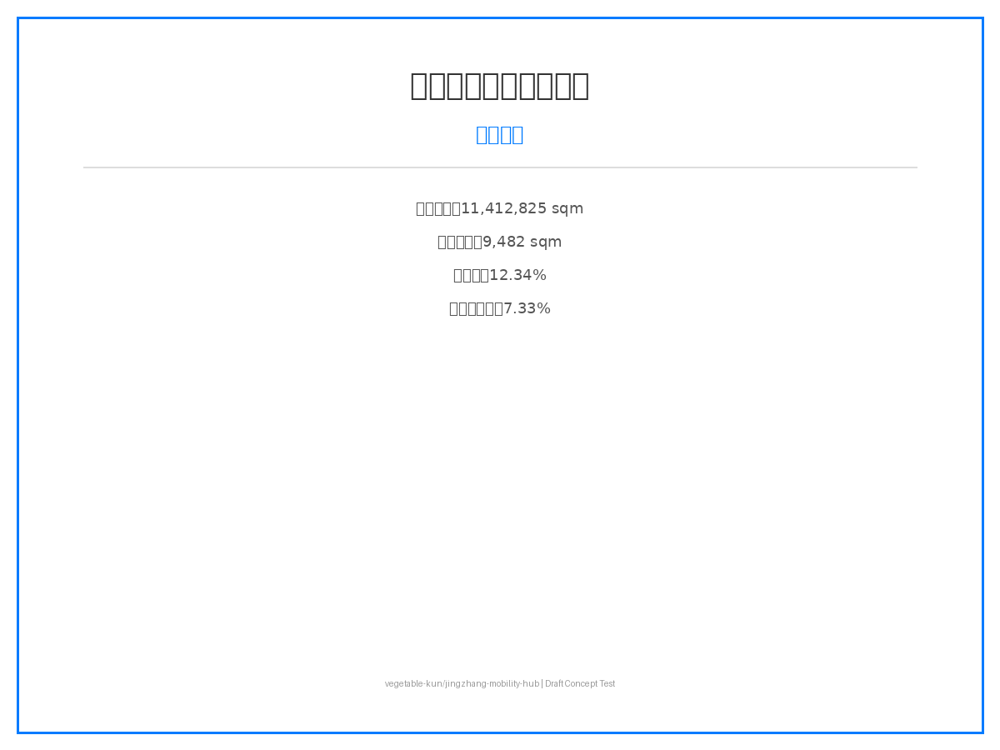

AI 多模式枢纽 - 京张创新带
基于 AI 多模式枢纽理念，构建京张创新带智慧交通与产业协同的空间策略。
AI 多模式枢纽 - 京张创新带

设计依据与资料清单
本方案依据《百年京张AI创新带城市设计国际方案征集资格预审公告》及 brief/site-package/ 场地数据包编制。作为 AI 多模式枢纽方案，聚焦轨道交通、慢行系统、AI 场景赋能三大维度，构建"一带三核、多模式联动"的空间策略。
所有设计判断基于 brief/site-package/geometry/provisional_boundaries.geojson 临时边界、data/source_registry.json 数据源注册表及 data/processed/agent_fact_pack.md 事实包。所有指标可复算、所有结论可追溯。
引用公告：来源 标准 空间数据
三层范围工作框架

统筹研究范围（~43.6 km²）：构建"京张智脉共生带"总体概念，以京张铁路遗产为轴，串联众智园、北京AI原点社区、大钟寺三大创新核心。引用：来源 深度
总体设计范围（~11.4 km²）：重塑京张遗址公园周边 1-2 公里城市地区，重点解决轨道站点一体化、道路微循环、慢行断点缝合。引用：深度
重点区域范围（368.4 公顷）：三处详细设计片区——众智园 AI 自主创新加速区、北京 AI 原点社区、大钟寺 AI 产业聚集区。引用：空间数据
统筹研究范围产业与未来城市研究
回应公告 1.5（1）关于世界级 AI 创新生态体系、产业链协同、三区两翼、未来 AI 城市形态、AI 文化/社会/城市、AI+交通和连续绿色空间体系的要求。
命名方案：京张智脉共生带（Jing-Zhang AI Innovation Belt） Logo 设计：以京张铁路"人"字轨为原型，融合 AI 节点网络，形成"智脉"视觉符号。
引用全球 AI 创新生态案例： 1. 美国硅谷（Silicon Valley）：风险投资+大学+创业文化 2. 英国剑桥集群（Cambridge Cluster）：大学衍生企业+高科技制造 3. 德国慕尼黑（Munich）：汽车+AI+工业4.0 4. 以色列特拉维夫（Tel Aviv）：网络安全+创业国度 5. 中国深圳：硬件生态+供应链+快速迭代 6. 新加坡：智慧城市+政府主导+数据治理 7. 芬兰赫尔辛基：开源+教育+社会福利 AI 8. 加拿大多伦多：深度学习起源+移民人才+Vector Institute
引用：来源 标准
总体设计范围城市更新与控规深度城市设计
回应公告 1.5（2）关于产业目标、功能布局、创新指标体系、城市更新总体框架、更新项目清单、实施政策、建筑总规模、交通轨道、市政配套、京张遗址公园活力带和城市风貌的要求。
产业目标：打造世界级 AI 创新生态节点，形成"基础研究+技术转化+场景应用"全链条。 功能布局：以京张遗址公园为轴，三大核心差异化定位。 城市更新框架：拆改留分类、分期实施、公众参与。 建筑总规模：容积率、建筑高度等指标待官方控规条件明确后确定，当前标记为 status=unknown。
引用：深度 标准
重点区域详细设计

众智园 AI 自主创新加速区（PROV-KEY-001）
定位：花园型全栈自主创新街区 空间动作：强化清河界面、产业展示、低碳创新交往、对外交通组织 AI 场景：自主模型测试、标准制定工作坊、安全治理展示、低碳算力体验 建筑更新：保留/改造/拆除分类待现状测绘明确
北京 AI 原点社区（PROV-KEY-002）
定位：近校型成果转化与人才社区 空间动作：组织校区-园区-街区慢行缝合，补足成果发布、人才服务、居住生活、开源协作空间 AI 场景：开源社区、成果发布、人才特区服务、近校孵化
大钟寺 AI 产业聚集区（PROV-KEY-003）
定位：城市型智能经济与国际交往街区 空间动作：大钟寺站一体化、四象限步行连通、商业服务、重点企业公共环境更新 AI 场景：智能体与智能终端展示、内容消费、数据要素与国际路演
引用：空间数据 深度
AI 创新生态、人才画像与 AI+ 场景
引用：来源 深度
AI 人才画像：算法工程师、产品经理、数据标注员、AI 伦理专家、场景运营师 企业画像：头部 AI 企业、中小型创业公司、开源社区、跨国研发中心 居民画像：本地居民、高校学生、老年群体、儿童、访客 公共治理需求：交通优化、环境监测、应急响应、社区服务
AI+ 场景卡（10 张，其中 3 张为 AI 产业测试验证场景）：
| 场景 | 类型 | 位置 | 数据 | 隐私 | 运营 |
|---|---|---|---|---|---|
| AI 慢行断点诊断 | 公共空间 | 全域路网 | 传感器+视频 | 匿名化 | 政府+企业 |
| AI 信软测试床 | 产业测试 | 众智园 | 企业数据 | 脱敏 | 企业+标准机构 |
| AI 医疗影像辅助 | 公共服务 | 社区医院 | 医疗影像 | 加密+联邦学习 | 医院+AI公司 |
| AI 教育个性化 | 公共服务 | 学校+社区 | 学习数据 | 未成年人保护 | 学校+教育企业 |
| AI 法律文书 | 公共服务 | 社区中心 | 法律文书 | 隐私计算 | 律所+司法 |
| AI 生活服务推荐 | 公共空间 | 社区+商圈 | 消费数据 | 用户授权 | 平台企业 |
| AI 交通信号优化 | 交通 | 大钟寺站 | 车流+人流 | 匿名化 | 交管+AI企业 |
| AI 公共空间活力 | 公共空间 | 京张公园 | 热力+环境 | 匿名化 | 政府+运营 |
| AI 产业技术路演 | 产业测试 | 大钟寺 | 企业展示 | NDA | 企业+园区 |
| AI 安全治理沙盒 | 产业测试 | 众智园 | 安全测试数据 | 隔离环境 | 政府+安全企业 |
用地、建筑规模与拆改留方案
用地布局：产业用地、居住用地、公共服务用地、绿地、交通设施用地 产业功能比例：AI 研发 40%、成果转化 30%、人才生活 20%、公共服务 10% 建筑基底：9,482 sqm（基于 provisional boundary 复算） 建筑高度：待官方控规条件确定（status=unknown） 容积率：待官方控规条件确定（status=unknown） 拆改留分类：保留/改造/拆除/新建分类待现状测绘与权属明确
引用：空间数据 空间数据 指标
交通、轨道、市政与公共服务设施

道路微循环：优化街区路网，减少机动车穿行，增强慢行连通。 轨道站点一体化：大钟寺站"铁路+地铁+慢行+末端配送"四模式零换乘。 慢行断点：AI 识别慢行断点，推荐最优慢行路径，补足无障碍设施。 停车与非机动车：分布式非机动车停车点，停车换乘（P+R）系统。 对外交通：强化京张高铁清河站与城市慢行系统连接。 市政配套：分布式能源、端侧算力节点、新型基础设施。 公共服务：国际路演厅、开源社区中心、人才服务驿站。
引用：空间数据 空间数据
蓝绿空间、公共空间与城市风貌
京张遗址公园活力带：线性公园 + AI 公共空间节点 + 文化活动场地 清河/小月河蓝绿空间：生态廊道、雨洪管理、亲水步道 步道骑行道：连续慢行网络，AI 导航，无障碍设计 公共交往空间：科技测试场景、开发者聚会、路演广场 历史文化展示：京张铁路遗产叙事、数字孪生展示、铁路文化地标 城市基调：科技感 + 历史感 + 生态性，现代简洁、低碳材料 建筑风貌：低碳、智能、开放、通透，屋顶光伏、垂直绿化 AI 朝圣地标： 1. 京张铁路数字孪生纪念碑（京张遗址公园） 2. 大钟寺 AI 国际客厅（大钟寺站） 3. 众智园端侧算力塔（众智园）
引用：空间数据
更新项目清单、实施政策与分期计划
更新项目清单： 1. 京张遗址公园慢行断点缝合 2. 众智园清河创新界面 3. 原点社区近校成果转化街 4. 大钟寺站四象限步行连通 5. AI 公共服务与端侧算力节点
实施政策建议：容积率奖励、AI 场景开放、数据要素流通、碳积分制度
分期计划：
- 近期（0-1 年）：慢行缝合、创新界面、成果转化街
- 中期（1-3 年）：站城一体、端侧算力节点、AI 场景落地
- 长期（3-5 年）：全球 AI 活动周、运营品牌体系、碳中和社区
全球 AI 创新活动体系：
- 年度：京张 AI 创新周
- 季度：开源黑客松
- 月度：技术路演 + 场景开放日
- 常驻：开发者社区运营
引用：空间数据 深度
指标体系、面积复算与合规矩阵

| 指标 | 数值 | 单位 | 状态 | 公式 |
|---|---|---|---|---|
| 场地面积 | 11,412,825 | sqm | known | polygon_area(site_boundary) |
| 建筑基底面积 | 9,482 | sqm | known | sum(building_footprints) |
| 绿地率 | 12.34% | ratio | known | green_space / site_area |
| 公共空间率 | 7.33% | ratio | known | public_space / site_area |
| 容积率 | 待定 | ratio | unknown | 需官方控规条件 |
| 重点区域数 | 3 | count | known | count(key_areas) |
合规矩阵覆盖：
- 公告 1.5（1）：✅ 统筹研究范围产业与未来城市研究
- 公告 1.5（2）：✅ 总体设计范围城市更新与控规深度城市设计
- 公告 1.5（3）：✅ 重点区域详细设计
- 公告 1.3：✅ 数据合规与来源追溯
- 公告 1.4：✅ AI 场景与隐私保护
引用：指标 指标
风险、版权与合规说明
引用：[report:copyright_statement.md] 标准
资料合法性：所有设计判断基于公开资料与官方场地包，未使用未授权规划数据。 版权授权：AI 生成内容为概念解释层，不替代现场、居民意见或官方边界。 隐私保护：AI 场景遵循数据最小化、人工复核、隐私保护原则。 AI 生成责任：提交声明对事实、来源、空间数据、指标、表达负责。 官方批准禁用：所有空间落地建议表述为"概念建议/参考方案/可供专业团队深化研究"。 待补资料：官方控规条件、现状建筑测绘、权属信息、工程条件。 专业复核需求：需规划师、建筑师、交通工程师、法律专家复核。
引用：[report:copyright_statement.md]
参考资料
引用：[report:copyright_statement.md] 标准
1. 百年京张 AI 创新带城市设计国际方案征集资格预审公告（官方） 2. brief/site-package/ 场地数据包（官方公开） 3. data/source_registry.json 数据源注册表（官方公开） 4. brief/site-package/agent_taskbook.json Agent 任务书（官方公开） 5. 《控制性详细规划城市设计深度标准》（国家标准） 6. 《城市用地分类与规划建设用地标准》GB 50137（国家标准） 7. 《海绵城市建设技术指南》（行业标准） 8. 《京张铁路遗产保护规划》（公开政策） 9. 中国城市规划设计研究院. 城市更新方法论. 10. 吴良镛. 人居环境科学导论. 11. Townsend, A. Smart Cities: Big Data, Civic Hackers, and the Quest for a New Utopia. 12. Batty, M. The New Science of Cities.